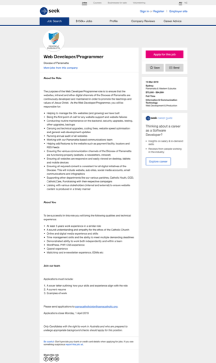
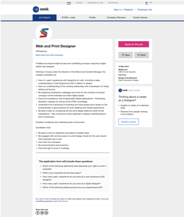
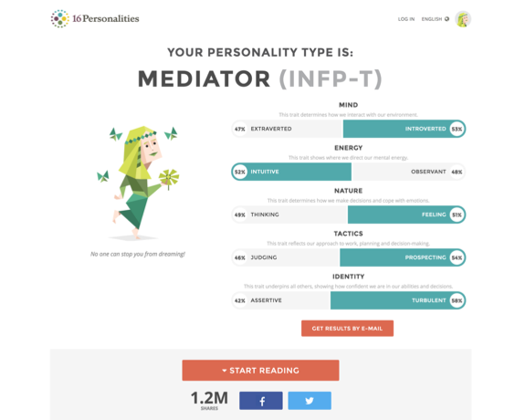
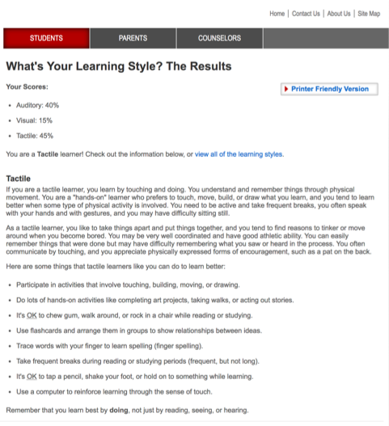
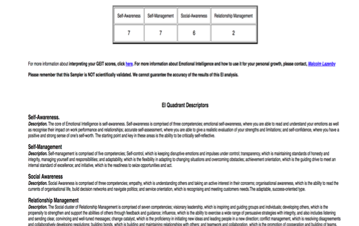

Interest IT:
What is Interest in IT?
My interest in IT is learning the different aspects of IT in general, however, my passion is Gaming Programming and Website Designing CMS and HTML. Because I did last year it was when I studied it was really enjoyable. I have always had an interest in IT because the world involves in IT, I also heard a lot of good thing about IT from other students who are doing course IT. I wanted to IT when I was in Year 9 as an elective and then I wanted to as subject and get into Uni and have a job within the IT industry.
When did your IT interest start?
When I was in high school expo where University come to talk with us about what area is more suited to me and I have enjoyed in Games. That’s when I want to do something with IT. My interest was included in using problem-solving and fixing the problem
Outline your IT experience?
I have worked with a real client where they wanted to build a mobile app I have learned the experience where your team members have problems where sometimes the people in the group are not helping the members.
Why did you choose RMIT?
I chose the this University of RMIT because of my Older sister went here and I have heard a lot of good things about the university and also, I have been to RMIT open days when I was in high school and IT in RMIT has lot course in the industry.
Why do you expect to learn during Studies?
To produce more skills in IT the different aspects like database, programming and the whole aspects of IT. I want to explore more IT not just one aspect of information technology. After doing. At the end of this course, I want to discover the technology just not one subject able to different accept of this course and find my strengths and weakness.
Personal Jobs:
- My first Presence Job 1- Website Design/Programmer
Website - https://www.seek.com.au/job/38588383?searchrequesttoken=1ee81023-548c-4599-a324-bf19153a367c&type=standout
Screenshot

I found this job on Seek, I chose this particular job because it’s both Web Developer and Programmer I have interest in doing, it’s using both WordPress, PHP, and CSS I have experience on these with my previous of designing a website.
I have worked with team members before, my role is Project Manager and Developer using these skills I will be right for the job.
The job requirements are:
- Upgrades, Backups, testing and maintenance
- Adding extra features
- Easily viewed on Desktops, tablets, and mobile devices
“Web Develop/Programmer” is appealing the most. Is using web development skills such as “WordPress, PHP and CSS” and digital media skills. These worlds that highlighted the most because I enjoy doing these aspects of this job, however, I am still learning on developing more about programming and PHP, CSS and etc I more interested in doing these requirements.
- My second presence Job 2- Web and Print Design
Website: https://www.seek.com.au/job/38585424?searchrequesttoken=2c6e147e-c55c-4971-95f1-fc63781a9401&type=promoted
Screenshot =

I choose “Web and Print Design” for my Second job because I enjoyed using HTML by using my knowledge form my previous experience. I also have an interest of designing of
The job requirements are:
- Wireframes, Webpages and other digital assists
- Practice on
- Adobe Application such as Photoshop, Illustrator, Indesign as well as some HTML knowledge.
- …
However, I am still learning the aspects of HTML and using application.
This job “Web and Print Designer” is structured to have more experience in using Mobile application.
Personal jobs
Test One: https://www.16personalities.com/profiles/0e61a6157391f

Test Two: http://www.educationplanner.org/students/self-assessments/learning-styles-quiz.shtml

Test Three: https://globalleadershipfoundation.com/cgi-bin/eiscore.pl

What does these test mean?
In a short summary my test has shown I am comfortable around people and find it easier to agree on thing which include my self- awareness that are able understand and capable the impact on my performance which I also go the same for self-management that understanding that maintain standards and honesty, the second test is learning test shows tactile which indicates I am an hands-on which I agree with result because I capable of building and the physical things. These result for test show that I am fully social and exploring new ideas and finding new ways of problem solving rather than reading and hearing information. These tests help me what my true identity was involving physical activity and emotional test it also indicates the accurate picture of who I am, the test will also help my getting a job in the future by using what my strength and weakness are so I can work on my strength if they are lacking.
https://www.16personalities.com/profiles/0e61a6157391f
How in these tests influence your behavior in a team?
These test will be behavior in a team of taking position for example leadership and other big roles that come with the future which I am assigned to accomplished I will try and to my fullest by being involving for example helping other and the set task that are given in the future and also my emotional factors such as test three states , I be trying to focus on manly the weakness however this will not agree to the team members.
http://www.educationplanner.org/students/self-assessments/learning-styles-quiz.shtml
How should you take this into account when forming a team?
Whilst forming a team I will make sure to work with different people that are different learning styles than me. I will also looking for team members that can have different roles not just one. I want find people that are visual based and ability to work of highest standards and using problem solving, which includes the self-emotion which is set on these tests.
https://globalleadershipfoundation.com/cgi-bin/eiscore.pl
Project ideas:
Overview
My Project is about Myki system for ticketing. Benefiting for customers and getting used to a new system. The changes I will be having a faster software system to for tapping on, my project will be including a safer and faster experience where user will be able to go through the tapping the Myki without a worry however software system safer for fines. The Myki will also give access able to pay online for myki on the phone or any technology by only card instead of going to the machine to always pay because some customer just wants just tap and get on the train instead of having to go through the machine to pay and be late for work or important meeting. I use a Myki software to pay online through ecteronic.
Motivation
I really want do the Myki system to pay by card online which will be though using devices because sometimes customer have important matters, this will be useful for the public importantly the people whom travel everyday by public transport, however I also want the customers to able check their balance on there device of how many money there is on their Myki card. This will show improvements how customer have benefits of having to use a Myki system on their device I really want to do this because people have been in rushing to get into the train without having tap on because they have not enough money which leads to getting a fine that is $223 or have to pay $75 on the spot.
Description
The myki card app is designed for customer that have trouble using the machine and waiting for people to fill up the Myki it’s also important to customer from using this this app there are strength and weakness from using this app the strength of using this app is it easy for customers to just pay online using the app and just tap on an get on the train the Myki app will always be updated
However, on the weakness the app will be having able locate your old myki that maybe loss.
which the app includes for users to pay by card online and putting money as they just have to tap on the train and check the money balance by using this app it will insure the customers access. This app will have a number or code which will have for every card they use however the code is not on the card but it’s on their emails or phone by message which will have to put in the app when they ask the code will only have your details not any other. This will give user privacy of their card and if they lose the Myki card there will have to buy another card and it will be the different code because its different Myki however the code forms the other Myki that was lost will be deleted and all the money that was from it from the database so the person picks up can’t use the Myki. This app will be focusing on functionality by the buttons and how useful the app is designed
Tools and Technologies
The tools and technologies that will be generated in building an using software and hardware I am going to use derive such as phones, laptops and other device that can be able to process money into the Myki which will have software app which will be access form android, Apple or any other software it will include an app that will be to access from the country of region which the phone already will set automatically for example Melbourne, Sydney or any other state. The Myki app will able to click on Tram, Train or Bus and the destination or location that you put. The Myki system will make sure to improve in the future to better system for the public. There hardware system will be generated by an operating system will give people to use their card and check the money balance
Skills Required
The Skills that are required is:
- Understanding a mobile user interface- This will make sure the user and the software will connect and the app will be able to make it easy to use for the user and well designed and organised
- App development
- should able to use bot android an IOS users which can be able to put coding in many devices.
- I will be using java script, html and CSS to develop the application in coding
These skills will be necessary for the app that will be created to help the Myki system to better within using software and hardware
Outcome
If the Myki system goes successfully and benefit for the public it and makes difference to the Myki software it will have an impact by continuing using this software app and by making small changes and upgrading the system to extent that public transport won’t be problem. Myki system will develop and easy approach for customers that will use. If there have negative impacts then the app will be improving to become more efficient by using safer privacy as numbers accounts while putting in money. The app will bring a new generation of proccing money to the Myki card and checking the system if there is no money.